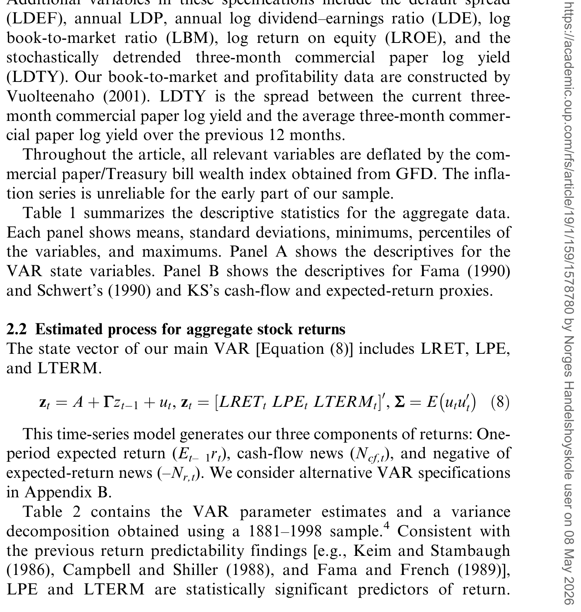
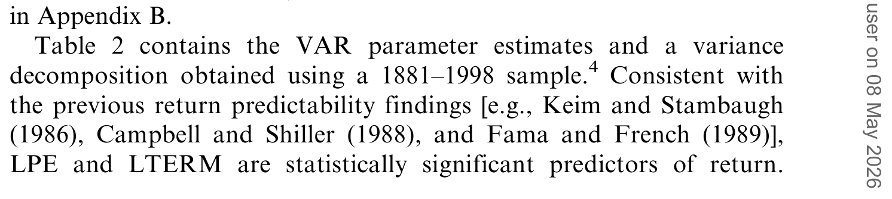
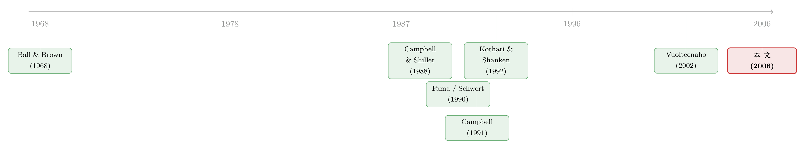

R² 说的不是「现金流」：一道把收益拆成三份的还原术
本文读的是 Hecht & Vuolteenaho (2006, Review of Financial Studies)：把股票收益对各种「现金流代理变量」（盈利增长、股利增长、未来工业生产……）做回归，再看 R² 有多高——这件几十年来被反复做的事，其实测的并不是「现金流消息」。作者用 Campbell (1991) 的收益分解，把一条回归拆成三条，发现那些「现金流代理」常常同时在偷偷追踪一期期望收益和期望收益消息，于是 R² 既可能高估、也可能低估现金流消息对收益方差的真实贡献。
1 一个做了几十年、却从没被问清楚的回归
先从一件几乎所有人都做过、也几乎所有人都相信的事说起。
把股票的总量收益，对一堆「现金流代理变量」做回归——可以是当期与未来的股利增长，可以是工业生产增速，也可以是盈利。Fama (1990)、Schwert (1990)、Kothari and Shanken (1992，下称 KS) 都这么干过，而且发现：这些现金流代理变量解释收益解释得很好。R² 动辄两三成。于是一个看上去顺理成章的结论被写进了文献：既然现金流代理能解释收益，那一定是「关于未来现金流的消息」在推动股价。KS 自己的原话是，「我们发现，市场对未来股利预期的代理变量，解释了相当大一部分收益变动」。
接着，一个自然的问题是：为什么会这样？ 这个「解释得好」，到底好在哪里？
这里就埋着本文要挑的那根刺。一笔股票收益高，无非三种可能：第一，它本来的一期期望收益就高（贴现率高，事先就该多赚）；第二，关于未来现金流的预期变好了，即现金流消息为正；第三，市场对未来期望收益的预期下调了，即期望收益消息为负（贴现率往下走，价格往上跳）。除非资产价格里存在永远不破的泡沫，否则任何一笔已实现收益，都只能由这三者拼出来。
那么问题就来了：当一个「现金流代理」和收益正相关时，这份相关到底来自哪一份？它可能真的在追踪现金流消息；但它同样可能只是在追踪贴现率——要么是事先的高期望收益，要么是期望收益消息。如果真相是后两者，那么把这个 R² 解读成「现金流消息驱动股价」，就是认错了人。
这一点其实早有人意识到。Fama (1990)、Schwert (1990)、KS、Campbell and Ammer (1993) 都承认：当收益被回到现金流代理上时，三种效应里任何一种都可能在驱动回归系数。但他们都没有把三者的相对重要性量出来。于是几十年过去，「现金流代理为什么能（或不能）解释收益」，始终是一笔糊涂账。本文要做的，就是把这笔账算清。
2 识别策略：把一条回归拆成三条
本文没有用什么新数据，也没有跑什么花哨的因果识别。它真正的「识别」，是一道还原术——把一个被混在一起的回归系数，拆回它的三个来源。
起点是 Campbell (1991) 基于 Campbell and Shiller (1988) 对股利—价格比所做的对数线性近似，对收益定义做的分解。把已实现的对数收益写成三块之和：
$$ r_t = E_{t-1}r_t + (E_t - E_{t-1})\sum_{i=0}^{\infty}\rho^{i}\,\Delta d_{t+i} \;-\; (E_t - E_{t-1})\sum_{j=1}^{\infty}\rho^{j}\,r_{t+j} $$
其中 \(r\) 是对数收益，\(\Delta d\) 是对数股利增长，\(\rho\) 是由平均股利率决定的常数，全文取 \(\rho = 0.96\)。右边第二项是对未来全部股利预期的修正——这就是现金流消息 \(N_{cf,t}\)；第三项是对未来全部期望收益预期的修正——这就是期望收益消息 \(N_{r,t}\)。于是分解可以紧凑地写成：
忽略掉很小的线性化误差，这个分解吃掉了整笔收益：股票收益就等于这三块之和。
接着是真正关键的一步。考虑一条典型的、把收益回到现金流代理上的回归：
$$ r_t = X(\Omega_T)_t\,\delta + \varepsilon_t $$
这里 \(X(\Omega_T)_t\) 是现金流代理变量，\(\Omega_T\) 表示「世界末日时的信息集」——这么写是为了允许 \(X\) 里可以装入相对 \(r_t\) 而言的过去、当期、甚至未来的实现值（比如未来三年的股利增长）。
由于 \(r_t = E_{t-1}r_t + N_{cf,t} - N_{r,t}\)，把它代进左边，这条回归就被劈成三条解释变量完全相同的分量回归：
$$ \begin{aligned} E_{t-1}r_t &= X(\Omega_T)_t\,\delta_{Er} + \varepsilon_{Er,t}\\ N_{cf,t} &= X(\Omega_T)_t\,\delta_{Ncf} + \varepsilon_{Ncf,t}\\ -N_{r,t} &= X(\Omega_T)_t\,\delta_{-Nr} + \varepsilon_{-Nr,t} \end{aligned} $$
因为三条分量回归的解释变量与原回归一模一样，把它们加起来就还原成了原回归：
$$ r_t = X(\Omega_T)_t\big(\delta_{Er} + \delta_{Ncf} + \delta_{-Nr}\big) + \big(\varepsilon_{Er,t} + \varepsilon_{Ncf,t} + \varepsilon_{-Nr,t}\big) $$
于是一个朴素却有杀伤力的恒等式浮出水面：
$$ \delta = \delta_{Er} + \delta_{Ncf} + \delta_{-Nr} $$
原回归里那个系数，是三个分量系数之和。 这就是全文的核心。一个现金流代理和收益的关系，可以因为它追踪了一期期望收益、追踪了现金流消息、或追踪了期望收益消息——又或者三者的任意组合——而显著。反过来，如果 \(X\) 与现金流消息的正向关系，被它与期望收益消息（或一期期望收益）的反向关系抵消掉，那么 \(X\) 完全可能解释了现金流消息、却解释不了收益。R² 高低，不再能被天真地读成「现金流消息的贡献」。
（这套「收益究竟是现金流消息还是贴现率消息」的视角，正是 Cochrane 主席演说的主题，可参见《贴现率：资产定价的中心议题》。）
3 怎么把三块「拆」出来：VAR 这把手术刀
要跑那三条分量回归，得先有一期期望收益、现金流消息、期望收益消息这三条时间序列当作被解释变量。可它们都不是直接能观测的。Campbell (1991) 给出的办法是：用一个向量自回归 (vector autoregression, VAR) 把它们一次性、且内部自洽地估出来。
令 \(z_t\) 是描述经济状态的状态向量，并且把它的第一个元素设成总量对数股票收益。状态向量服从一阶线性律：
$$ z_t = A + G z_{t-1} + u_t $$
误差项 \(u_t\) 的协方差矩阵记为 \(\Sigma\)，且与 \(t-1\) 时已知的一切独立。定义 \(e1' \equiv [1\;0\;\cdots\;0]\)，再定义 Campbell (1991) 引入的那个让一切大大简化的行向量：
$$ \lambda' \equiv e1'\,\rho G\,(I - \rho G)^{-1} $$
剩下的就像变魔术。对状态方程取期望，一期期望收益就是 \(e1'(A + G z_{t-1})\)；期望收益消息可以干净地写成 \(\lambda' u_t\)；而现金流消息，按 Campbell 的做法，是用「已实现收益 − 期望收益 + 期望收益消息」倒推出来的残差，即 \((e1' + \lambda')u_t\)。
这里有个特别清爽的直觉：如果收益不可预测——也就是 \(G\) 的第一行全是零——那么期望收益消息恒为零，整笔收益就全部归于现金流消息。换句话说，「现金流消息解释一切」只是「收益完全不可预测」这个特例下的结论；而几十年的可预测性文献早已告诉我们，事实并非如此。
作者也老实交代了这把手术刀的局限：VAR 是线性的，未必逼近真实的收益生成过程；方差分解的结论条件于状态向量里装了哪些变量，漏掉相关的状态变量就可能得出错误结论；而且它无法区分期望收益的变动到底是理性的风险补偿、还是错误定价。但作者强调，即便贴现率变动来自错误定价，这套分解仍然有用——它至少把「收益与现金流的真实关系」从「期望收益与现金流消息的相关结构」里隔离了出来。
4 数据：从 1881 年说起的一百多年
总量回归用的数据来自 CRSP、Global Financial Data (GFD)、Shiller (2000)、Schwert (1990) 与 Macaulay (1938)，区间 1881–2001，全部为年度频率。主 VAR 的状态向量装了三样东西：年度对数收益 LRET、对数市盈率 LPE（用 S&P 500 价格除以过去十年平均盈利，取自 Shiller 2000）、以及十年期国债对数收益率与三月期商业票据对数收益率之差 LTERM。

Table 1: summarizes the descriptive statistics for the aggregate data
在主状态变量之外，作者还按前人设定准备了两套代理变量。模仿 Fama (1990) 与 Schwert (1990)：期望收益代理用违约利差 LDEF、期限利差 LTERM、以及两者的冲击 LDEFS、LTERMS；现金流代理用当期到未来三年的对数股利增长 LGD、LGDF1、LGDF2、LGDF3。模仿 KS：再加上对数股利率 LDP、以及未来一到三年的对数收益 LRETF1–LRETF3。由于有些设定要用到三年的前瞻变量，VAR 只估到 1998 年。所有变量都用商业票据/国债财富指数做了平减——因为样本早期的通胀序列不可靠。
5 反转：那些「现金流代理」其实在追踪贴现率
先看主 VAR 自己说了什么。

Table 2: contains the VAR parameter estimates and a variance
如表 2 所示，与几十年的可预测性文献一致，LPE 与 LTERM 都是收益的统计显著的预测变量，且二者都高度持续。更要紧的是方差分解的结果：期望收益消息的方差，是现金流消息方差的 5.34 倍——贴现率消息远比现金流消息更「闹腾」，这与 Campbell and Ammer (1993) 的发现一脉相承。两条消息序列的相关系数为 −0.29，这个负号也讲得通：意外的好时光往往伴随投资者风险厌恶下降，于是均衡的未来期望收益走低。
有了这把尺子，再回头去拆那些经典回归，反转就一个接一个地出现了。
总量层面。 违约利差 LDEF 正向追踪一期期望收益——这是「本意之内」的；可它同时与现金流消息负相关——这是「本意之外」的。两股力量相互抵消，结果股票收益与违约利差之间那个本该显著的正关系，变得不显著。期限利差的冲击 LTERMS 也类似：它正向追踪期望收益消息（本意之内），却又正向追踪现金流消息，于是收益与 LTERMS 之间留下一个不显著的正关系。在当期与未来股利增长里，只有当期股利增长 LGD 与现金流消息显著正相关；但由于它同时与期望收益消息强烈负相关，它与收益的正关系反而被放大了。
至于 KS 那条「清洗测量误差」的设定也没能幸免：他们为了清洗未来股利增长里的测量误差，加进了滞后股利率与未来收益。本文发现，这些「清洗变量」带来的增量解释力里，有相当一部分其实来自贴现率效应——滞后股利率正向追踪一期期望收益，未来收益则与期望收益消息正相关。
真正戏剧性的一幕，出现在公司层面。 与 Vuolteenaho (2002)、Cohen, Gompers, and Vuolteenaho (2003) 一致，本文估出的公司层面 VAR 显示，公司层面的期望收益消息与现金流消息强烈正相关。这会带来惊人的后果。以 Easton and Harris (1991) 为例，他们把收益回到当期盈利（用滞后价格标准化）上。在本文样本里跑一条大致相似的回归，得到系数 0.75、R² 10%——看起来盈利对收益的解释力平平。
可一旦把估出来的现金流消息回到同一个盈利变量上，系数跳到了 1.30、R² 高达 27%。也就是说，盈利其实是现金流消息相当好的追踪器！那为什么原回归里它显得这么弱？因为它同时还在追踪贴现率：它与期望收益消息的负值回归得到系数 −0.70、R² 19%，与一期期望收益回归得到系数 0.15、R² 9%。这两股力量与现金流消息那一股部分抵消，最后给原回归只剩下一个低系数、低 R²。
于是 Lev (1989) 那个流传已久的解释——「盈利对收益的解释力低，是因为盈利缺乏及时性、或含有与价值无关的噪声」——在这里被掀开了另一种可能：即便盈利是现金流消息的干净信号，贴现率效应（风险调整后折现率的变动，或错误定价）也足以把盈利—收益关系搅浑。 低 R² 不一定是盈利的错。
6 文献脉络
把这条线索捋一捋，会发现本文恰好坐在两支文献的交汇口。
一支来自会计：Ball and Brown (1968) 开启了对盈利与收益当期相关的实证研究，此后 Beaver, Clarke, and Wright (1979)、Easton and Harris (1991)、Collins et al. (1994) 反复确认，盈利能解释的收益方差显著小于 1（通常不到 10%）。Lev (1989) 给出的解释是「及时性不足 + 噪声」。
另一支来自资产定价：Campbell and Shiller (1988) 的对数线性近似，催生了 Campbell (1991) 那套把收益拆成期望收益、现金流消息、期望收益消息的方差分解；Campbell and Ammer (1993) 用它分析了股票与债券市场。与此并行，Fama (1990)、Schwert (1990) 用实体经济活动解释收益，Kothari and Shanken (1992) 用未来股利预期解释收益——这些正是本文要重新审视的对象。再往后，Vuolteenaho (2002) 把分解搬到了公司层面，发现公司收益主要由现金流消息驱动、且两条消息正相关，这为本文公司层面那一幕反转提供了直接的弹药。

本文的位置因此很清楚：它不去创造新的预测变量，而是把上面两支文献共用的那条回归，用 Campbell (1991) 的语言翻译了一遍，告诉大家——你们一直在测的那个 R²，并不是你们以为的那个东西。
（关于「公司层面的长期期望收益其实高度趋同」这条后续线索，可顺带参见《五年之后，所有股票的预期收益都回到了平均数》。）
7 评论与延伸（Q&A + 研究方向）
(a) 几个可能的疑问
Q：这篇文章到底有没有「新结果」，还是只是把旧回归重新解释了一遍？
它的贡献正是「重新解释」本身，但这绝非小事。在它之前，大家只是模糊地知道「三种效应都可能在起作用」；本文第一次把三者的相对量级算了出来——比如盈利对现金流消息的 R² 是 27%，远高于它对收益的 10%。这把一句定性的警告，变成了可量化的诊断。
Q：那个 5.34 的方差比，是不是太依赖 VAR 里塞了哪三个变量？
是的，这是最该警惕的地方。方差分解的所有结论都条件于状态向量。作者在附录 B 里换了若干替代设定（加入
LDEF、LBM、LROE、LDTY等）来检验稳健性，但他们自己也坦承：若遗漏了与已纳入变量相关的关键状态变量，结论可能被扭曲。读这类方差分解，永远要先问「状态向量里有什么、没有什么」。
Q：把现金流消息当成残差倒推出来，会不会比直接算未来股利的折现和更不可靠？
这是个很自然的担心。作者专门回应说：把股利增长直接放进 VAR 状态向量、直接计算现金流消息，得到的结果与残差法非常接近。所以这个「间接」并没有偷偷塞进更强的假设。
Q：期望收益的变动，是理性的风险补偿还是错误定价，这套方法分得清吗？
分不清，作者明说了 VAR 框架无法区分二者。但他们论证：即便贴现率变动全部来自错误定价，分解依然有意义——总存在一些理性投资者，从他们的视角理解价格行为是有价值的；而且只要现金流消息与错误定价（表现为期望收益消息）不是不相关的，分解就能把二者的相关结构控制住，从而隔离出收益与现金流的真实关系。
Q：公司层面那个「两条消息正相关」，为什么和总量层面（−0.29）反号？这不矛盾吗？
不矛盾，这恰恰是文章最有意思的一处。总量上，好时光压低风险厌恶、压低未来期望收益，于是现金流消息与期望收益消息负相关。公司层面则不同：单个公司的好现金流消息往往伴随其期望收益的上修（与 Vuolteenaho 2002 一致），于是正相关。正因为这个正相关，盈利对现金流消息的强追踪，才会在原回归里被贴现率效应大幅抵消掉。
Q：那以后是不是就不该再做「收益回到现金流代理」这种回归了？
不是要废掉它，而是要给它配上分量回归当「读数说明书」。单看一个 R² 没法判断现金流消息的贡献；但把它拆成对 \(E_{t-1}r\)、\(N_{cf}\)、\(-N_r\) 三条分量回归，就能一眼看出这份解释力来自哪里。本文给的是工具，不是禁令。
(b) 几个可能的研究问题与提案
1. 把这套分解搬到公司债收益上。 - 【经济故事】公司债收益同样可以拆成「事先的信用利差/期望收益 + 现金流（违约预期）消息 + 贴现率消息」。市场常把信用利差变动一股脑归给「违约预期恶化」，但其中很可能混着流动性溢价与风险价格的变动——这正是本文逻辑的债市翻版。 - 【可行性】中。需要 TRACE 成交价 + 发行人基本面（评级、盈利）构造债券层面 VAR；难点在于债券收益的非线性（期权性、违约边界）会让线性 VAR 的近似变差，需谨慎设定状态向量。
2. 外资持有人冲击下，收益的三块各自如何反应。 - 【经济故事】当外资大举进出一国市场时，价格变动到底来自基本面消息，还是来自贴现率（风险价格）的重定价？把外资流量当作工具，去看它主要推动现金流消息还是期望收益消息，能直接检验「外资是稳定器还是放大器」。 - 【可行性】中。需要跨国持仓数据（如 FactSet/EPFR）+ 国家层面 VAR；识别上可借力指数纳入等准自然实验制造外生的外资需求冲击。
3. 危机时期现金流消息与贴现率消息的此消彼长。 - 【经济故事】2008 与 2020 的暴跌，多大比例是「真的对未来现金流绝望」，多大比例是「风险价格瞬间飙升」？本文方法天然适合给危机做这种归因，且对政策含义直接——若主要是贴现率消息，央行的流动性干预就更有道理。 - 【可行性】高。数据现成（CRSP、宏观利差），方法即本文 VAR；唯一要小心的是危机期间线性 VAR 可能严重失真，需做样本分段或状态依赖设定。
4. 把「分析师盈利预期误差」接进分解。 - 【经济故事】近年文献（如把价值、动量收益归给分析师预期错误）暗示，很多「异象收益」可能是现金流预期的系统性偏差。用本文框架，可检验这些偏差究竟落在现金流消息一支，还是被投资者当成了贴现率信号。 - 【可行性】中。需要 I/B/E/S 预期数据对齐 VAR 频率；难点是预期误差与已实现现金流消息的概念区分要做干净，否则会循环论证。
8 参考文献与我的判断
我的判断是：这是一篇方法论上极其干净、姿态也极其诚实的文章。它的贡献不在于发现了某个新变量，而在于给一整支跨越会计与资产定价的实证传统，提供了一面照妖镜——你以为 R² 在说现金流，其实它一半在说贴现率。盈利对现金流消息的 27% vs. 对收益的 10%，这一组对照本身就值回票价：它把「盈利信息含量低」这个被引用了几十年的刻板印象，重新打开成了一个可能根本不是盈利的错的问题。
对识别，我有两点保留。其一，一切都押在 VAR 的设定上。5.34 这个方差比、公司层面的正相关，都条件于状态向量；附录 B 的稳健性检验缓解但不能消除「遗漏状态变量」的隐忧——而方差分解对此恰恰最敏感。其二，理性 vs. 错误定价的不可分意味着，本文能告诉你「贴现率在动」，却不能告诉你这个「动」该不该让你担心；对很多政策与投资判断而言，这恰恰是最想知道的那一步。
后续我最想看到的，是把这套分解配上更外生的冲击（货币政策、外资流量、指数纳入），让「贴现率消息」从一个统计残差，变成一个有清晰经济来源的对象。届时，「现金流还是贴现率」这个问题，才算从核算走向了因果。
参考文献
- Ball, R., and P. Brown (1968). An Empirical Investigation of Accounting Income Numbers. Journal of Accounting Research 6, 159–178.
- Beaver, W., R. Clarke, and W. Wright (1979). The Association between Unsystematic Security Returns and the Magnitude of Earnings Forecast Errors. Journal of Accounting Research 17, 316–340.
- Campbell, J. Y. (1991). A Variance Decomposition for Stock Returns. Economic Journal 101, 157–179.
- Campbell, J. Y., and J. Ammer (1993). What Moves the Stock and Bond Markets? A Variance Decomposition for Long-Term Asset Returns. Journal of Finance 48, 3–37.
- Campbell, J. Y., and R. J. Shiller (1988). The Dividend-Price Ratio and Expectations of Future Dividends and Discount Factors. Review of Financial Studies 1, 195–228.
- Cohen, R., P. Gompers, and T. Vuolteenaho (2003). Who Underreacts to Cash-Flow News? Evidence from Trading between Individuals and Institutions. Journal of Financial Economics 66, 409–462.
- Collins, D., S. P. Kothari, J. Shanken, and G. Sloan (1994). Lack of Timeliness versus Noise as Explanations for Low Contemporaneous Return-Earnings Association. Journal of Accounting and Economics 18, 289–324.
- Easton, P., and T. Harris (1991). Earnings as an Explanatory Variable for Returns. Journal of Accounting Research 29, 19–36.
- Fama, E. F. (1990). Stock Returns, Expected Returns and Real Activity. Journal of Finance 45, 1089–1108.
- Kothari, S. P., and J. Shanken (1992). Stock Return Variation and Expected Dividends: A Time Series and Cross-Sectional Analysis. Journal of Financial Economics 31, 177–210.
- Lev, B. (1989). On the Usefulness of Earnings and Earnings Research: Lessons and Directions from Two Decades of Empirical Research. Journal of Accounting Research 27, 153–202.
- Schwert, G. W. (1990). Stock Returns and Real Activity: A Century of Evidence. Journal of Finance 45, 1237–1257.
- Vuolteenaho, T. (2002). What Drives Firm-Level Stock Returns? Journal of Finance 57, 233–264.